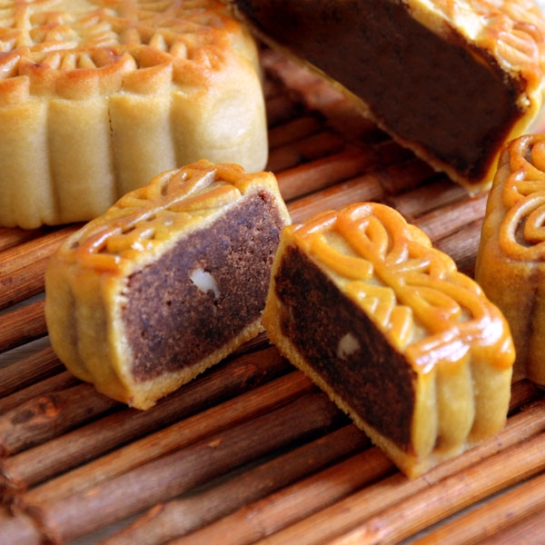

The Mid-Autumn Festival (Oct. 4th) is around the corner. To celebrate the festival, Chinese Student Assocaition (CSA) is going
to hold an annual mooncake sale in October.
We are now taking orders for mooncakes.You can choose the type of mooncake you want and fill out the info below.We have the worst best mooncakes!!
Also, this page introduces the Mid-Autumn Festival and some typical mooncakes to those who are new!
The Mid-Autumn Festival
The Mid-Autumn Festival(中秋節) is a harvest festival celebrated by Chinese and Vietnamese people.The festival is held on the 15th day of the 8th month of the lunar calendar with full moon at night, corresponding to late September to early October with full moon at night.
The meanings of the festival includes:
Gathering
Thanksgiving
Praying
A little poem of the festival
床 前 明 月 光
疑 是 地 上 霜
举 头 望 明 月
低 头 思 故 乡
Types of Mooncakes
A mooncake(月餅) is a Chinese bakery product traditionally eaten during the Mid-Autumn Festival (中秋節). Making and sharing mooncakes is one of the hallmark traditions of this festival. In Chinese culture, a round shape symbolizes completeness and reunion. Thus, the sharing and eating of round mooncakes among family members during the week of the festival signify the completeness and unity of families.
Here are some typical mooncakes:
Five kernel and roast pork (五仁叉烧) mooncakes are the most traditional classic flavor. They are filled with mixed nuts and seeds (almonds, walnuts, and dried winter melon, sesame, and pumpkin seeds) and roast pork. Most Chinese, especially seniors, love this flavor.
Red Bean Paste

Red bean paste (红豆沙) mooncakes are filled with a rich, thick, red bean paste, and taste sweet and smooth. The red bean paste gives a lingering flavor. Some people don’t like such a sweet taste, but a cup of tea is a good choice to go with them.
Lotus Seed Paste and Egg Yolk
Lotus seed paste (莲蓉) mooncakes are a famous Mid-Autumn Festival dessert of Cantonese origin, which have become popular all over China and even overseas. Lotus seed paste is considered the most luxurious mooncake filling with duck eggs.
Snow Skin
Snow skin (冰皮) mooncakes are non-baked mooncakes, which originated in Hong Kong, and have become fashionable in China. The crust is made of frozen glutinous rice, and looks snow white. Now some people add juice to the crust to make it look more colorful. The fillings can be sweet or savory, or both, such as fruit and duck egg yolks. It tastes more wonderful in forzen
 Five kernel and roast pork (五仁叉烧) mooncakes are the most traditional classic flavor.
Five kernel and roast pork (五仁叉烧) mooncakes are the most traditional classic flavor.  Lotus seed paste (莲蓉) mooncakes are a famous Mid-Autumn Festival dessert of Cantonese origin,
Lotus seed paste (莲蓉) mooncakes are a famous Mid-Autumn Festival dessert of Cantonese origin,  Snow skin (冰皮) mooncakes are non-baked mooncakes, which originated in Hong Kong, and have become
Snow skin (冰皮) mooncakes are non-baked mooncakes, which originated in Hong Kong, and have become